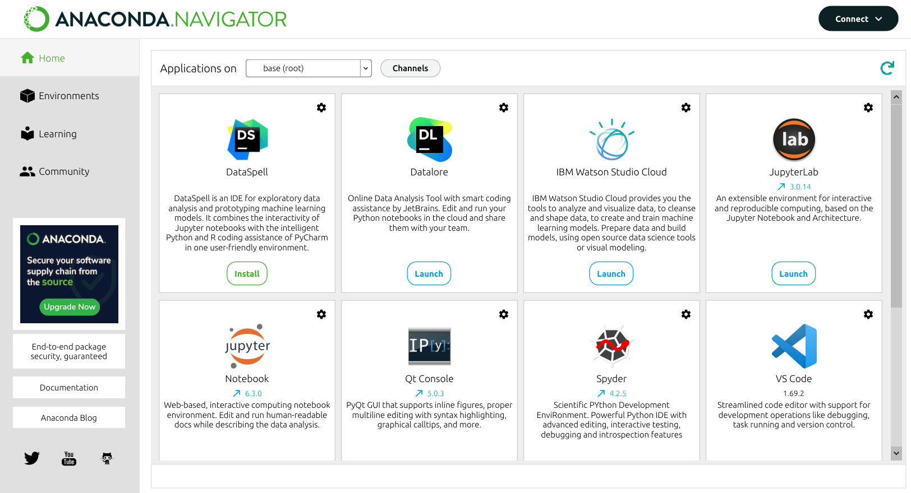

Installing Python
How can I install Python?
There are two options:
- Using the official installer
- Using the Anaconda Distribution of Python (preferred option)
What are the distinctive features of Anaconda?
- Anaconda is ‘battery-included’ — it comes with a humongous number of modules for data science
- If you use the official Python installation, you must install the modules you need on your own!
- Anaconda is a bundle of various pieces of software:
condais the Swiss army knife to manage Python modules and environments- Anaconda Navigator is the graphical interface from within to access Python IDEs and related desktop/web applications
What are the steps to install Anaconda?
Here are the steps:
Download the installer for your operating system (unless you have a very old machine running Windows, go for the 64-Bit version)
Run the installer
For Linux: navigate to the folder where you have downloaded the installer as per step 1, open a shell session, then run:
$ bash ./Anaconda3-XXXX.XX-Linux-x86-64.shFor Windows and Mac OS: just run the graphical installer downloaded in step 1
Accept the terms proposed by the Anaconda people to use their software, comprising Python, the
condapackage manager, and a bundle of modules for data scienceThat’s it!
- For Linux users: if you accepted the default installation options, an environmental variable is created either in your
.bashrcor.zshrc. That means you can access the various pieces of software included in the Anaconda installation (e.g., Anaconda Navigator) from a shell session - For Windows and Mac OS users: the various pieces of software included in the Anaconda installation are available from the menu of your system
- For Linux users: if you accepted the default installation options, an environmental variable is created either in your
What are the pieces of software included in Anaconda?
There are plenty of applications included in the Anaconda installation. These applications can be accessed from within Anaconda Navigator, available in the launcher of your operating system.

Integrated Development Environments (IDEs)
Popular choices for Python development:
- VS Code: Free, lightweight, excellent Python support
- PyCharm: Full-featured IDE with advanced debugging tools
- Spyder: Designed specifically for scientific Python
Jupyter Lab/Notebook
Jupyter is an interactive environment perfect for data analysis and learning Python.
Starting Jupyter: - Open Anaconda Navigator and click “Launch” under Jupyter Lab - Or from command line: bash jupyter lab
Benefits of Jupyter: - Interactive code execution - Mix code, text, and visualizations - Great for experimentation and prototyping - Industry standard for data analysis
Package Management with conda
Conda is a package manager that comes with Anaconda. It helps you install and manage Python packages.
Setting up the Course Environment
We’ve provided an env.yml file in the repository that includes all necessary packages for this course. You can create the environment using:
# Create environment from the env.yml file
conda env create -f env.yml
# Activate the environment
conda activate ind216Alternatively, you can create the environment manually:
# Create a new environment for this course
conda create -n ind216 python=3.13
# Activate the environment
conda activate ind216
# Install essential packages
conda install -c conda-forge numpy pandas matplotlib jupyter
# List installed packages
conda list
# Deactivate environment when done
conda deactivateEssential Packages for Analytics
Here are the key packages we’ll use throughout the course:
import numpy as np # Numerical computing
import pandas as pd # Data manipulation
import matplotlib.pyplot as plt # Basic plotting
# Check if packages are working
print(f"NumPy version: {np.__version__}")
print(f"Pandas version: {pd.__version__}")Quick Reference
# Running Python code
python script.py # Run a Python file
python -i script.py # Run and enter interactive mode
jupyter lab # Start Jupyter Lab
# Package management
conda install package # Install a package
conda list # List installed packages
pip install package # Alternative package installerNext Steps
Now that you have Python set up, you’re ready to dive deeper into Python objects and data types. Continue to Python Objects to learn about the fundamental building blocks of Python programming.